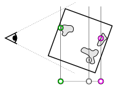
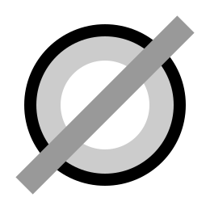

Instructions
Navodila
The study consists of very short (5 seconds) videos, in which you will estimate the relative distance between the points in 3D space.
Študijo sestavljajo zelo kratki (5 sekundni) posnetki, v katerih boste ocenjevali relativno razdaljo med točkami v 3D prostoru.
When the video loads, press the play button. When the video stops playing, a green, pink, and grey point will appear. Use the slider to estimate the relative distance of the grey point between the green and pink points, as shown in the image below:
Ko se video naloži, pritisnite na gumb za predvajanje. Po predvajanem videu se bodo prikazale tri točke: zelena, rožnata in siva. Z drsnikom nato po svojih najboljših močeh ocenite relativno razdaljo sive točke glede na zeleno in rožnato, kot prikazuje spodnja slika:
With this button you can replay the video (max 1x per video):
S tem gumbom lahko ponovno predvajate video (največ 1x na video):
With this button you can hide/show the points if they obscure your view:
S tem gumbom lahko skrijete/prikažete točke, če vam zastirajo pogled:
Completing the study will take around 45 minutes. You may refresh the site at any time, you can also come back to the website later to finish the study.
Reševanje bo trajalo okrog 45 minut. Spletno stran lahko kadarkoli osvežite, študijo lahko tudi prekinete in se na spletno stran vrnete kasneje, da študijo dokončate.
START ZAČNI